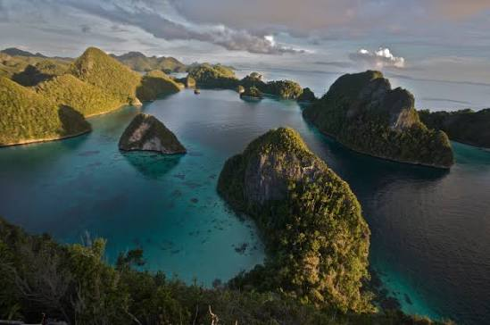
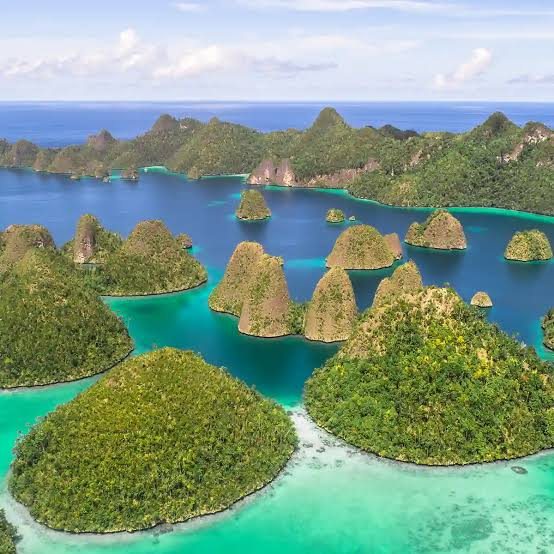
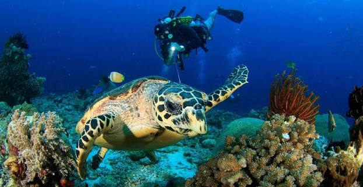
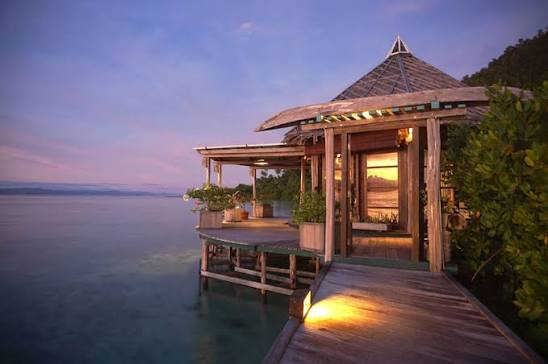

Raja Ampat, Papua Barat
Raja Ampat merupakan salah satu destinasi wisata bahari terbaik di dunia yang terletak di ujung barat Papua. Kawasan ini dikenal memiliki keanekaragaman hayati laut tertinggi di dunia, dengan ratusan pulau karst, terumbu karang, dan biota laut yang menjadikannya surga bagi para penyelam dan pecinta alam.

Selain keindahan bawah lautnya, Raja Ampat juga menawarkan panorama pulau-pulau kecil yang menjulang dari laut biru jernih, menjadikannya lokasi favorit untuk fotografi lanskap maupun wisata petualangan.
Video Profil Destinasi
Galeri Foto


